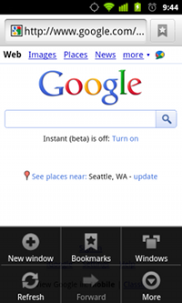

一、本节引言：
本章给大家带来的是Android中的Menu(菜单)，而在Android中的菜单有如下几种：
- OptionMenu：选项菜单，android中最常见的菜单，通过Menu键来调用
- SubMenu：子菜单，android中点击子菜单将弹出一个显示子菜单项的悬浮框， 子菜单不支持嵌套，即不能包括其他子菜单
- ContextMenu：上下文菜单，通过长按某个视图组件后出现的菜单，该组件需注册上下文菜单
本节我们来依依学习这几种菜单的用法~
PS：官方文档：menus
二、OptionMenu(选项菜单)
1）如何使用OptionMenu？
答：非常简单，重写两个方法就好，其实这两个方法我们在创建项目的时候就会自动生成~ 他们分别是：
- public boolean
onCreateOptionsMenu(Menu menu)：调用OptionMenu，在这里完成菜单初始化 - public boolean
onOptionsItemSelected(MenuItem item)：菜单项被选中时触发，这里完成事件处理
当然除了上面这两个方法我们还可以重写这三个方法：
- public void onOptionsMenuClosed(Menu menu)：菜单关闭会调用该方法
- public boolean onPrepareOptionsMenu(Menu menu)：选项菜单显示前会调用该方法， 可在这里进行菜单的调整(动态加载菜单列表)
- public boolean onMenuOpened(int featureId, Menu menu)：选项菜单打开以后会调用这个方法
而加载菜单的方式有两种，一种是直接通过编写菜单XML文件，然后调用：
getMenuInflater().inflate(R.menu.menu_main, menu);加载菜单 或者通过代码动态添加，onCreateOptionsMenu的参数menu，调用add方法添加 菜单，add(菜单项的组号，ID，排序号，标题)，另外如果排序号是按添加顺序排序的话都填0即可！
2）使用示例：
运行效果图：
代码实现：
MainActivity.java：
public class MainActivity extends AppCompatActivity {
//1.定义不同颜色的菜单项的标识:
final private int RED = 110;
final private int GREEN = 111;
final private int BLUE = 112;
final private int YELLOW = 113;
final private int GRAY= 114;
final private int CYAN= 115;
final private int BLACK= 116;
private TextView tv_test;
@Override
protected void onCreate(Bundle savedInstanceState) {
super.onCreate(savedInstanceState);
setContentView(R.layout.activity_main);
tv_test = (TextView) findViewById(R.id.tv_test);
}
@Override
public boolean onCreateOptionsMenu(Menu menu) {
// Inflate the menu; this adds items to the action bar if it is present.
menu.add(1,RED,4,"红色");
menu.add(1,GREEN,2,"绿色");
menu.add(1,BLUE,3,"蓝色");
menu.add(1,YELLOW,1,"黄色");
menu.add(1,GRAY,5,"灰色");
menu.add(1,CYAN,6,"蓝绿色");
menu.add(1,BLACK,7,"黑色");
return true;
}
@Override
public boolean onOptionsItemSelected(MenuItem item) {
// Handle action bar item clicks here. The action bar will
// automatically handle clicks on the Home/Up button, so long
// as you specify a parent activity in AndroidManifest.xml.
int id = item.getItemId();
switch (id){
case RED:
tv_test.setTextColor(Color.RED);
break;
case GREEN:
tv_test.setTextColor(Color.GREEN);
break;
case BLUE:
tv_test.setTextColor(Color.BLUE);
break;
case YELLOW:
tv_test.setTextColor(Color.YELLOW);
break;
case GRAY:
tv_test.setTextColor(Color.GRAY);
break;
case CYAN:
tv_test.setTextColor(Color.CYAN);
break;
case BLACK:
tv_test.setTextColor(Color.BLACK);
break;
}
return super.onOptionsItemSelected(item);
}
}
代码分析：
上述的代码非常简单，给大家演示了Android 5.0的中OptionMenu(选项菜单)中动态添加菜单， 以及事件处理，根据id判断用户点击的是哪一项，然后执行对应的操作！ 另外，有一点要注意的是，选项菜单经过了三个阶段的过渡： 在Android 2.3.x或者更低版本，因为该阶段大部分的机型都是带有Menu键的， 此阶段通过点击Menu键弹出菜单：

而在Android 3.0或者更高的版本，则是通过3.0引入的ActionBar中的setting菜单：

而在5.0以上的版本则是在ToolBar中的，点击后出一个溢出式的菜单样式
另外通过XML方式定义Menu的方式，我们贴个简单的参考代码：
<?xml version="1.0" encoding="utf-8"?>
<menu xmlns:android="http://schemas.android.com/apk/res/android">
<item android:id="@+id/new_game"
android:icon="@drawable/ic_new_game"
android:title="@string/new_game"
android:showAsAction="ifRoom"/>
<item android:id="@+id/help"
android:icon="@drawable/ic_help"
android:title="@string/help" />
</menu>
其他的自行查阅文档哈~
三、ContextMenu(上下文菜单)
一开始我们就说了，长按某个View后出现的菜单，我们需要为这个View注册上下文菜单！
1）如何使用ContextMenu？
答：使用的流程如下：
Step 1：重写onCreateContextMenu()方法Step 2：为view组件注册上下文菜单，使用registerForContextMenu()方法,参数是ViewStep 3：重写onContextItemSelected()方法为菜单项指定事件监听器 上面的OptionMenu我们使用了Java代码的方法来完成菜单项的添加，这里我们就用XML文件的 方式来生成我们的CotnextMenu吧，另外关于使用Java代码来生成菜单还是使用XML来生成菜单， 建议使用后者来定义菜单，这样可以减少Java代码的代码臃肿，而且不用每次都用代码分配 id，只需修改XML文件即可修改菜单的内容，这样在一定程度上为程序提供的了更好的解耦， 低耦合，高内聚，是吧~
2）使用示例：
运行效果图：

实现代码：
我们先来编写选项菜单的菜单XML文件：
menu_context.xml：
<?xml version="1.0" encoding="utf-8"?>
<menu xmlns:android="http://schemas.android.com/apk/res/android">
<!-- 定义一组单选按钮 -->
<!-- checkableBehavior的可选值由三个：single设置为单选，all为多选，none为普通选项 -->
<group android:checkableBehavior="none">
<item android:id="@+id/blue" android:title="@string/font_blue"/>
<item android:id="@+id/green" android:title="@string/font_green"/>
<item android:id="@+id/red" android:title="@string/font_red"/>
</group>
</menu>
接着我们在选项菜单的那个基础上，添加一个TextView，然后加上下面一些东西：
private TextView tv_context;
tv_context = (TextView) findViewById(R.id.tv_context);
registerForContextMenu(tv_context);
//重写与ContextMenu相关方法
@Override
//重写上下文菜单的创建方法
public void onCreateContextMenu(ContextMenu menu, View v,
ContextMenu.ContextMenuInfo menuInfo) {
MenuInflater inflator = new MenuInflater(this);
inflator.inflate(R.menu.menu_context, menu);
super.onCreateContextMenu(menu, v, menuInfo);
}
//上下文菜单被点击时触发该方法
@Override
public boolean onContextItemSelected(MenuItem item) {
switch (item.getItemId()) {
case R.id.blue:
tv_context.setTextColor(Color.BLUE);
break;
case R.id.green:
tv_context.setTextColor(Color.GREEN);
break;
case R.id.red:
tv_context.setTextColor(Color.RED);
break;
}
return true;
}
好的，就是那么简单~可以为多个View设置上下文，switch(v.getId)你懂的~ 另外，和等下要讲的子菜单一样，上下文菜单都无法显示图标！
四、SubMenu(子菜单)
所谓的子菜单只是在<item>中又嵌套了一层<menu>而已
代码示例： 运行效果图

： 实现代码:
编写子菜单的Menu文件：menu_sub.xml：
<?xml version="1.0" encoding="utf-8"?>
<menu xmlns:android="http://schemas.android.com/apk/res/android">
<item android:id="@+id/submenu" android:title="子菜单使用演示~">
<menu>
<group android:checkableBehavior = "none">
<item android:id="@+id/one" android:title = "子菜单一"/>
<item android:id="@+id/two" android:title = "子菜单二"/>
<item android:id="@+id/three" android:title = "子菜单三"/>
</group>
</menu>
</item>
</menu>
接着我们改下上面上下文菜单的两个方法的内容，换上下面的代码：
public void onCreateContextMenu(ContextMenu menu, View v,
ContextMenu.ContextMenuInfo menuInfo) {
//子菜单部分：
MenuInflater inflator = new MenuInflater(this);
inflator.inflate(R.menu.menu_sub, menu);
super.onCreateContextMenu(menu, v, menuInfo);
}
public boolean onContextItemSelected(MenuItem item) {
switch (item.getItemId()) {
case R.id.one:
Toast.makeText(MainActivity.this,"你点击了子菜单一",Toast.LENGTH_SHORT).show();
break;
case R.id.two:
item.setCheckable(true);
Toast.makeText(MainActivity.this,"你点击了子菜单二",Toast.LENGTH_SHORT).show();
break;
case R.id.three:
Toast.makeText(MainActivity.this,"你点击了子菜单三",Toast.LENGTH_SHORT).show();
item.setCheckable(true);
break;
}
return true;
}
好的，灰常简单是吧，另外，如果你想在Java代码中添加子菜单的话，可以调用addSubMenu()
比如：SubMenu file = menu.addSubMenu("文件");file还需要addItem添加菜单项哦！
五、PopupMenu(弹出式菜单)
一个类似于PopupWindow的东东，他可以很方便的在指定View下显示一个弹出菜单，而且 他的菜单选项可以来自于Menu资源，下面我们写个简单的例子来使用下这个东东~
使用示例： 运行效果图：

实现代码：
菜单资源文件：menu_pop.xml：
<?xml version="1.0" encoding="utf-8"?>
<menu xmlns:android="http://schemas.android.com/apk/res/android">
<item android:id="@+id/lpig" android:title="小猪" />
<item android:id="@+id/bpig" android:title="大猪" />
</menu>
在布局中添加一个按钮，然后添加点击事件：
MainActivity.java:
btn_show_menu.setOnClickListener(new View.OnClickListener() {
@Override
public void onClick(View v) {
PopupMenu popup = new PopupMenu(MainActivity.this,btn_show_menu);
popup.getMenuInflater().inflate(R.menu.menu_pop, popup.getMenu());
popup.setOnMenuItemClickListener(new PopupMenu.OnMenuItemClickListener() {
@Override
public boolean onMenuItemClick(MenuItem item) {
switch (item.getItemId()){
case R.id.lpig:
Toast.makeText(MainActivity.this,"你点了小猪~",
Toast.LENGTH_SHORT).show();
break;
case R.id.bpig:
Toast.makeText(MainActivity.this,"你点了大猪~",
Toast.LENGTH_SHORT).show();
break;
}
return true;
}
});
popup.show();
}
});
非常简单，新技能get了没？
六、示例代码下载
七、本节小结：
好的，本节给大家介绍了Android中的三种菜单，选项菜单，上下文菜单以及子菜单，最后 还讲解了一个PopupMenu的控件，这里只演示了基本的用法，其他属性可自行查阅文档， 文档才是最好的老师~嗯，就说这么多，谢谢，对了今天国庆，祝大家国庆玩得开心！